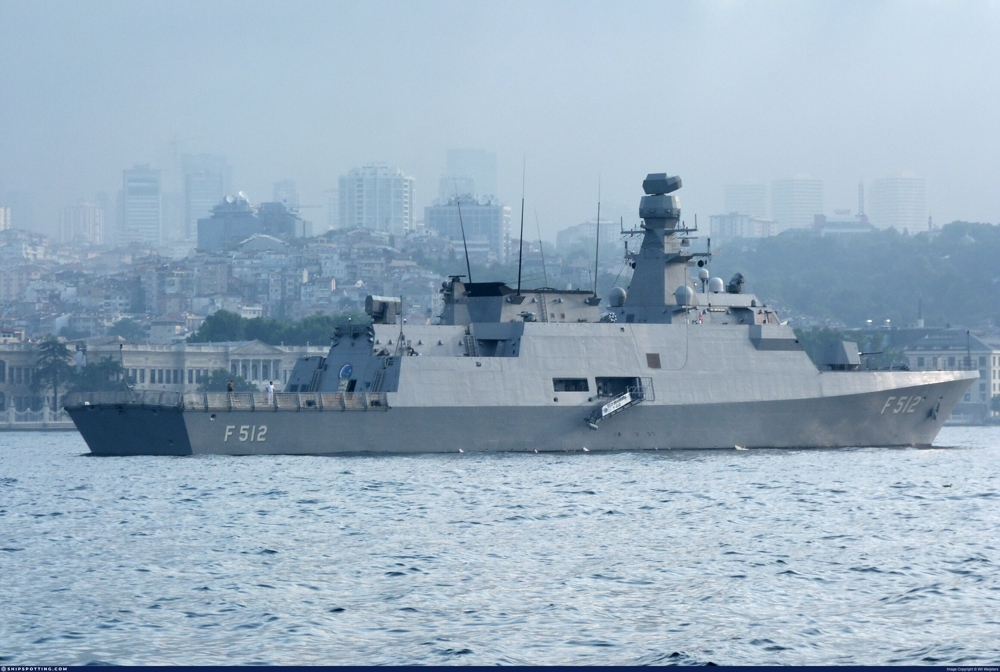
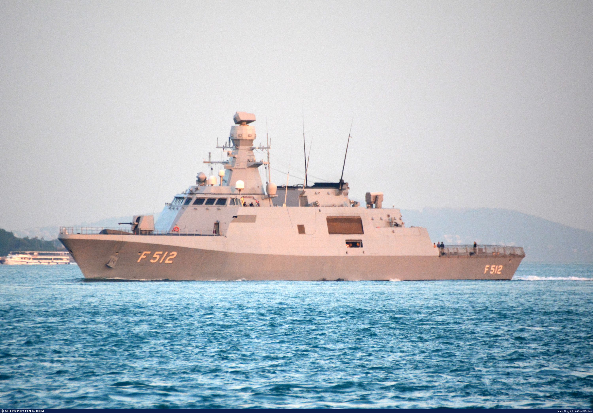

Genel Bilgi
TCG Büyükada (F-512), Türkiye’nin milli savaş gemisi programı olan MİLGEM kapsamında geliştirilen Ada Sınıfı korvetlerin ikinci gemisidir. Platform, öncelikle denizaltı savunma harbi ve keşif-karakol görevleri için tasarlanmış; bunun yanında suüstü harbi, hava savunma ve kıyı güvenlik görevlerinde de kullanılabilecek çok rollü bir korvet yapısına sahiptir.
Ada sınıfı tasarım yaklaşımında düşük görünürlük, yüksek manevra kabiliyeti, gelişmiş savaş yönetim sistemi, sonar ve modern radar sensörleri ön plana çıkmaktadır. TCG Büyükada da bu sınıfın bir üyesi olarak milli gemi inşa kabiliyetinin önemli örneklerinden biridir.
Gemi, Türk Deniz Kuvvetleri envanterinde denizaltı savunma harbi, deniz gözetleme, münhasır ekonomik bölge devriyesi, kıyı ve kritik altyapı koruma ile hava-suüstü-sualtı tehditlerinin tespiti ve imhası görevlerinde kullanılmaktadır.



Teknik Özellikler
| Gemi Sınıfı | Ada Sınıfı Korvet |
| Gemi Adı | TCG Büyükada |
| Borda Numarası | F-512 |
| Program | MİLGEM |
| Sınıftaki Yeri | Ada Sınıfı’nın ikinci gemisi |
| Görev Profili | Denizaltı savunma harbi, keşif-karakol, deniz gözetleme, suüstü harbi, hava savunma, kıyı ve kritik altyapı koruma, MEB devriyesi |
| Üretim Yaklaşımı | Milli imkanlarla tasarlanmış ve entegre edilmiş savaş gemisi |
| Hizmete Giriş | 27 Eylül 2013 |
| Boy | 99,5 m |
| Genişlik | 14,4 m |
| Draft | Yaklaşık 3,6 m |
| Deplasman | Yaklaşık 2.300 - 2.400 ton sınıfı |
| Tahrik Sistemi | CODAG (Combined Diesel and Gas) |
| Gaz Türbini | 1 adet gaz türbini |
| Dizel Motor | 2 adet dizel motor |
| Sevk Özelliği | Yüksek sürat ve ekonomik seyir için birleşik dizel + gaz türbini düzeni |
| Azami Hız | 29+ knot |
| Menzil | Yaklaşık 3.500 deniz mili |
| Denizde Kalış | Uzun süreli karakol ve deniz gözetleme görevlerine uygun |
| Mürettebat | Yaklaşık 90+ personel |
| Helikopter Platformu | Mevcut |
| Helikopter Kapasitesi | 1 adet deniz helikopteri |
| Havacılık Desteği | Helikopter konuşlandırma, yakıt ikmali ve görev desteği |
| Stealth Özelliği | Düşük radar kesit alanına sahip stealth gövde formu |
| IR İz Azaltma | Kızılötesi iz azaltıcı tasarım yaklaşımı |
| Manyetik İz Azaltma | Degaussing sistemi |
| Akustik İz Azaltma | Sualtı akustik izi düşürmeye yönelik çözümler |
| Savaş Yönetim Sistemi | ADVENT / sınıfın modern savaş yönetim altyapısı |
| Radar | 3B hava ve suüstü arama radarı sınıfı sensörler |
| Sonar | Denizaltı savunma harbi için sonar sistemi |
| Elektronik Harp | Modern elektronik destek ve karşı tedbir altyapısı |
| Muhabere Sistemleri | Gelişmiş taktik veri bağı ve muhabere sistemleri |
| Seyrüsefer Sistemleri | Modern platform seyir ve komuta sistemleri |
| Ana Top | 76 mm baş top |
| Yakın Hava Savunma | RAM YHSS / yakın hava savunma sistemi |
| Gemi Savar Füze | ATMACA / Harpoon sınıfı gemi savar füze entegrasyonu |
| Torpido Sistemi | Denizaltı savunma harbi için torpido sistemi |
| Silah Profili | Hava, suüstü ve sualtı tehditlerine karşı çok katmanlı angajman |
| Asıl Güçlü Yönü | Denizaltı savunma harbi ve keşif-karakol görevleri |
| İkincil Güçlü Yönü | Suüstü harbi ve kıyı güvenliği görevleri |
| Proje Önemi | Milli savaş gemisi tasarımı ve entegrasyon kabiliyetinin operasyonel ürünü |
| Öne Çıkan Özellik | Düşük görünürlük, güçlü denizaltı savunma harbi sensörleri ve milli savaş gemisi mimarisi |